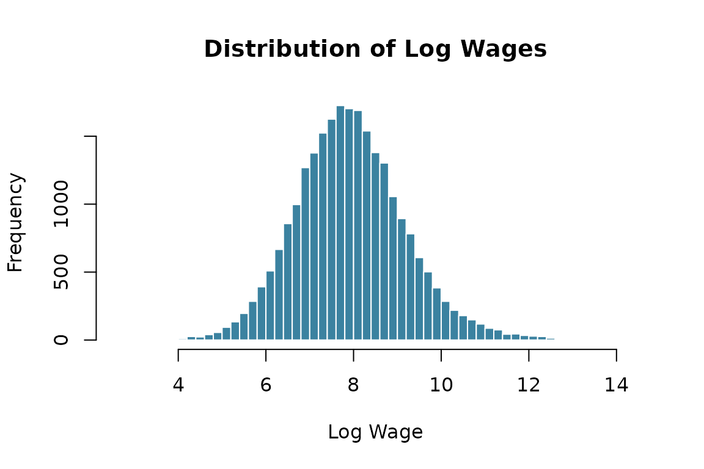

Goal
This vignette walks through a complete analysis of a simulated labor market: simulate the data, explore it, estimate an AKM model, decompose wage variance, and correct for limited mobility bias.
1. Simulate the Data
We simulate a labor market with 5,000 workers observed over 5
periods, with moderate mobility (lambda = 0.15) and a
Mincer wage equation:
library(labormarket)
library(data.table)
set.seed(2024)
lm_obj <- simlabormarket(
nk = 4, # 4 firm types
nl = 5, # 5 worker types
nt = 5, # 5 time periods
ni = 5000, # 5,000 workers
lambda = 0.15, # 15% moving probability
ratiog = 0.45, # 45% female
mincer = TRUE # Mincer wage equation
)
#> -- LaborMarket simulation ---
#>
#> Parameters
#> Firm types (nk): 4
#> Worker types (nl): 5
#> Time periods (nt): 5
#> Individuals (ni): 5000
#> Female ratio: 0.45
#> Mobility (lambda): 0.15
#>
#> Summary statistics
#> Observations: 25000
#> Mean wage: 7.931
#> Mean firm effect: 2.554
#> Mean worker effect: 4.144
#> Mean age: 38.7
#> Mean education: 16.1
#> Mean experience: 12.1
panel <- lm_obj@panel2. Explore the Panel
Summary Statistics
# Wage and key variables
summary_vars <- panel[, .(
mean_wage = mean(lw),
sd_wage = sd(lw),
mean_age = mean(age),
mean_educ = mean(educ),
mean_exper = mean(experience),
pct_female = mean(gender)
)]
t(summary_vars)
#> [,1]
#> mean_wage 7.930652
#> sd_wage 1.250121
#> mean_age 38.714200
#> mean_educ 16.113800
#> mean_exper 12.123640
#> pct_female 0.457000Wage Distribution
hist(panel$lw, breaks = 50, col = "#3B82A0", border = "white",
main = "Distribution of Log Wages", xlab = "Log Wage")
Gender Wage Gap
panel[, .(mean_wage = mean(lw), n = .N), by = gender]
#> gender mean_wage n
#> <num> <num> <int>
#> 1: 0 7.960131 13575
#> 2: 1 7.895626 114253. Estimate the AKM Model
We estimate the classic Abowd, Kramarz, and Margolis (1999) two-way fixed effects decomposition:
library(fixest)
panel$fid_f <- as.factor(panel$fid)
panel$i_f <- as.factor(panel$i)
# Restrict to the largest connected set
cf <- lfe::compfactor(list(panel$i_f, panel$fid_f))
largest <- names(which.max(table(cf)))
panel_conn <- panel[cf == largest]
panel_conn[, i_f := droplevels(i_f)]
panel_conn[, fid_f := droplevels(fid_f)]
cat("Observations in connected set:", nrow(panel_conn), "/", nrow(panel), "\n")
#> Observations in connected set: 24970 / 25000
# Estimate
model <- feols(lw ~ 1 | i_f + fid_f, data = panel_conn)
#> NOTE: 0/1 fixed-effect singleton was removed (1 observation).
summary(model)
#> OLS estimation, Dep. Var.: lw
#> Observations: 24,969
#> Fixed-effects: i_f: 4,994, fid_f: 994
#> RMSE: 0.873302 Adj. R2: 0.35829Extract Fixed Effects
fe <- fixef(model)
alpha_hat <- fe$i_f # worker effects
psi_hat <- fe$fid_f # firm effects
cat("Worker effects — mean:", round(mean(alpha_hat), 3),
" sd:", round(sd(alpha_hat), 3), "\n")
#> Worker effects — mean: 8.25 sd: 0.814
cat("Firm effects — mean:", round(mean(psi_hat), 3),
" sd:", round(sd(psi_hat), 3), "\n")
#> Firm effects — mean: -0.311 sd: 0.7644. Variance Decomposition
The variance of log wages decomposes as:
# Match FEs back to observations
fe_list <- fixef(model)
# Use fixef_id to map observations to fixed effects (handles singletons)
alpha_vec <- fe_list$i_f[model$fixef_id$i_f]
psi_vec <- fe_list$fid_f[model$fixef_id$fid_f]
# Subset to model observations if singletons were removed
obs_rm <- model$obs_selection$obsRemoved
if (!is.null(obs_rm)) {
panel_conn <- panel_conn[obs_rm] # negative indices = rows to drop
}
panel_conn[, alpha_hat := alpha_vec]
panel_conn[, psi_hat := psi_vec]
panel_conn[, resid := lw - alpha_hat - psi_hat]
var_wage <- var(panel_conn$lw)
var_alpha <- var(panel_conn$alpha_hat)
var_psi <- var(panel_conn$psi_hat)
cov_ap <- cov(panel_conn$alpha_hat, panel_conn$psi_hat)
var_resid <- var(panel_conn$resid)
decomp <- data.frame(
Component = c("Var(alpha)", "Var(psi)", "2*Cov(alpha,psi)", "Var(residual)", "Total"),
Value = round(c(var_alpha, var_psi, 2 * cov_ap, var_resid, var_wage), 4),
Share = round(c(var_alpha, var_psi, 2 * cov_ap, var_resid, var_wage) / var_wage * 100, 1)
)
decomp
#> Component Value Share
#> 1 Var(alpha) 0.6628 42.4
#> 2 Var(psi) 0.5686 36.4
#> 3 2*Cov(alpha,psi) 0.0222 1.4
#> 4 Var(residual) 1.9142 122.4
#> 5 Total 1.5633 100.05. Correct Limited Mobility Bias
The variance decomposition above is biased when
firms have few movers. We use lmbias() to correct this:
panel_conn$xbeta <- 0 # intercept-only model
results <- lmbias(model, panel_conn, R = 50)
print(round(results, 4))
#> Var of i_f Var of fid_f Covariance Correlation
#> Original 0.6628 0.5686 0.0111 0.0181
#> Bias 0.2896 0.1646 -0.1376 -0.6305
#> Corrected 0.3732 0.4040 0.1487 0.6485Interpretation
cat("--- Variance of Worker Effects ---\n")
#> --- Variance of Worker Effects ---
cat(" Original: ", round(results["Original", 1], 4), "\n")
#> Original: 0.6628
cat(" Bias: ", round(results["Bias", 1], 4), "\n")
#> Bias: 0.2896
cat(" Corrected:", round(results["Corrected", 1], 4), "\n\n")
#> Corrected: 0.3732
cat("--- Variance of Firm Effects ---\n")
#> --- Variance of Firm Effects ---
cat(" Original: ", round(results["Original", 2], 4), "\n")
#> Original: 0.5686
cat(" Bias: ", round(results["Bias", 2], 4), "\n")
#> Bias: 0.1646
cat(" Corrected:", round(results["Corrected", 2], 4), "\n\n")
#> Corrected: 0.404
cat("--- Correlation ---\n")
#> --- Correlation ---
cat(" Original: ", round(results["Original", 4], 4), "\n")
#> Original: 0.0181
cat(" Corrected:", round(results["Corrected", 4], 4), "\n")
#> Corrected: 0.6485The bias correction typically reduces the estimated variance of both worker and firm effects (since limited mobility inflates them) and can meaningfully change the estimated sorting correlation.
Summary
| Step | Function | What it does |
|---|---|---|
| Simulate | simlabormarket() |
Generate worker-firm panel with known DGP |
| Estimate | fixest::feols() |
Two-way FE (AKM) decomposition |
| Correct | lmbias() |
Bootstrap bias correction for limited mobility |
This workflow lets you study how parameters like mobility
(lambda), number of firm types (nk), and
sample size (ni) affect the magnitude of limited mobility
bias — a key concern in empirical labor economics.